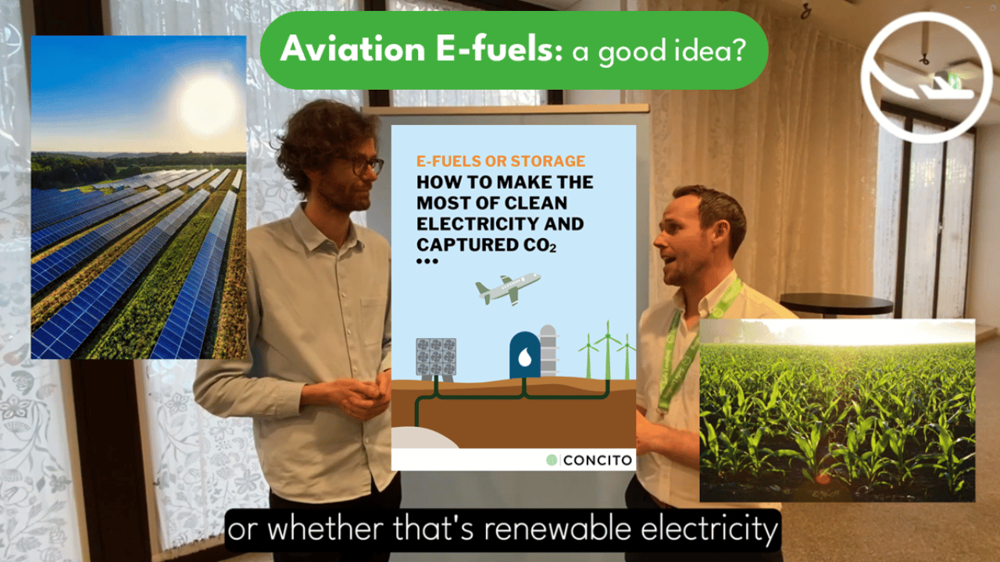

Aviation E-fuels: a good idea? – CONCITO Interview
2025‑06‑27 • Interviews
✈️ How can we make the most of clean electricity within aviation?
⚡ Karsten Capion of CONCITO , a green think tank based in Denmark, chatted to Finlay Asher of Safe Landing about their analysis related to aviation e-fuels.
👀 Watch the full interview here:
💡 Karsten’s analysis supports the conclusions that it’s a good thing for aviation to finance renewable energy for society-wide decarbonisation – including green hydrogen production for some industrial processes such as green steel and green fertiliser, and some carbon capture. However, it would not be efficient or economic to combine green hydrogen with captured carbon in order to make aviation e-fuels, rather than using those resources separately for other purposes.